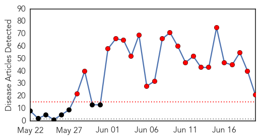
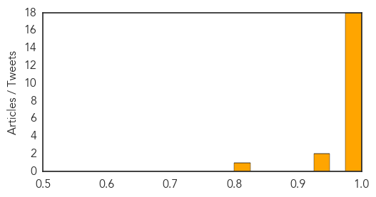
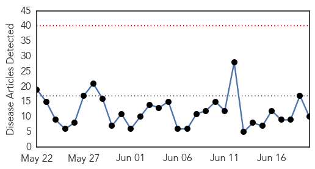
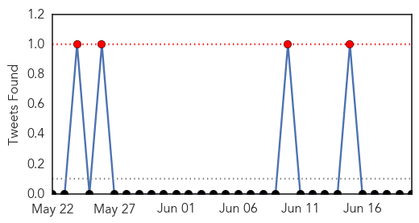
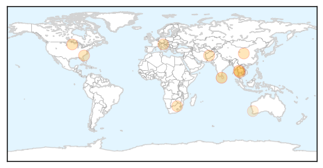

MERS
30-Day Web Trend
22 alerts, 0 warnings

30-Day Twitter Trend
19 alerts, 3 warnings

Article Locations
Article Confidences
Top Articles:
- 1.000
- Nigerian News from Leadership News
- 1.000
- What is the MERS Outbreak in South Korea?
- 0.999
- South Korea’s MERS deaths reach 23 – KABB
- 0.998
- MERS spread shows signs of slowing in S Korea, Others news, Health News, AsiaOne YourHealth
- 0.998
- 175 exposed, authorities take immediate action, quarantines people
- 0.998
- MERS: No cause for alarm in PH
- 0.996
- No travel ban to countries with MERS-CoV
- 0.995
- Palace: No travel ban to countries with Mers cases
- 0.994
- No need for travel advisories for countries with MERS – Palace
- 0.993
- Palace allays public fears on MERS-CoV infection
- 0.993
- Going for Haj or to Thailand? Check out MERS advisory
- 0.990
- South Korea MERS outbreak has 'levelled off'
- 0.987
- Thai embassy: no Thais in South Korea come down with Mers
- 0.986
- Governor checks Phuket Airport's MERS control efforts
- 0.984
- WHO statement on Thailand MERS case
- 0.983
- Coronavirus Claims 24th Victim in South Korea
- 0.980
- South Korea MERS Outbreak Has 'Leveled Off'; One New Case
- 0.979
- Borneo , Malaysia, Sarawak Daily NewsBorneoPost Online
- 0.947
- Hospitals told to train for MERS
- 0.944
- Tabloids revel in South Korea's MERS misery
- 0.807
- Oman Air confirms its passenger tested positive for Mers in Thailand
Top Tweets:
- 0.610
- AFD Blog `Korean MERS Cluster – No New Cases MERS-CoV http://t.co/aWrK3tdk9D
- 0.590
- AFD Blog `Saudi MOH Reports 1 Additional MERS Case In Hofuf' MERS-CoV HCW http://t.co/05hJP6Dpij
Influenza
30-Day Web Trend
0 alerts, 0 warnings

30-Day Twitter Trend
1 alerts, 0 warnings

Article Locations
Article Confidences

Top Articles:
- 0.999
- Sri Lanka on ‘Red Alert’ for MERS virus -Health Ministry
- 0.981
- Chinese Patient in Surabaya Tests Negative for MERS Infection
- 0.920
- Times Of Oman :: Oman Air urges Thailand-bound passengers to get tested after MERS threat
- 0.824
- No additional canine flu cases at St. Paul animal shelter
- 0.808
- No new contract for Alberta’s top doc, Dr. James Talbot to step down
- 0.751
- June 19, 2015 Archives
- 0.751
- June 19, 2015 Archives
- 0.751
- June 19, 2015 Archives
- 0.751
- June 19, 2015 Archives
- 0.515
- Colds and flu hit blood stocks
Top Tweets:
- 0.670
- Complete Genome Sequence of a Highly Pathogenic Avian Influenza Virus (H5N2) Associated with an Outbreak in http://t.co/FaIgrdfvhM